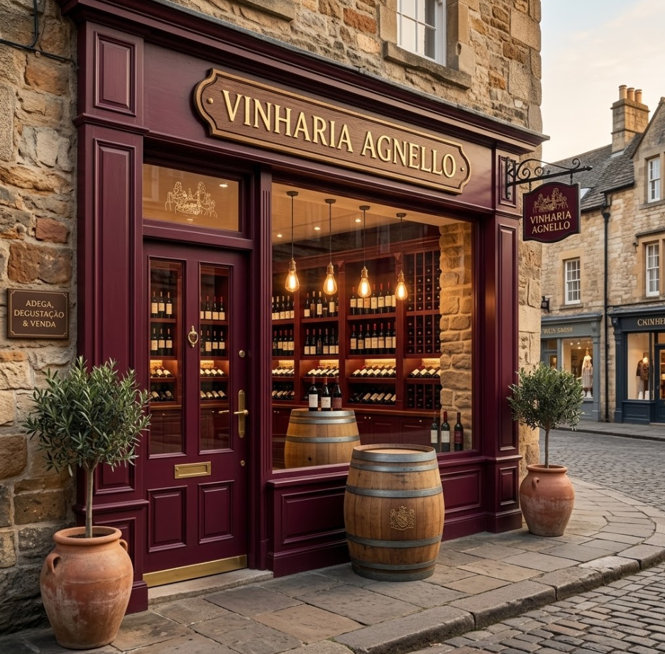

Tradição, Encontros e Futuro
Uma jornada de acolhimento humano, paixão pelos vinhos e a evolução contínua da família Agnello em São Paulo.
Tudo começou há mais de 15 anos em São Paulo. O Sr. Giulio Agnello, um estudioso apaixonado pelas sutilezas do mundo dos vinhos, abriu as portas da Vinheria Agnello com um propósito claro: criar um espaço onde o vinho não fosse apenas uma garrafa na prateleira, mas um convite para boas conversas e momentos inesquecíveis.
Para o Sr. Giulio, o universo dos vinhos — com suas mais de 6.000 variedades de uvas viníferas — nunca deveria ser intimidador. O coração da nossa loja sempre foi o atendimento humano. Ali, clientes iniciantes e conhecedores exigentes sempre encontraram o mesmo acolhimento.
Nossa equipe faz questão de traduzir rótulos complexos em recomendações práticas, ajudando você a descobrir o par perfeito para um almoço de domingo, um jantar para visitas ou uma noite de risoto e boas companhias.

“A tecnologia não precisa afastar as pessoas, mas sim expandir as fronteiras do acolhimento.”— Bianca Agnello, Diretora de Inovação & E-commerce
A Coragem de Mudar Mantendo a Nossa Alma
No entanto, o mundo mudou, e nós precisamos mudar com ele. Com as recentes restrições de mobilidade que afastaram as pessoas das ruas, nosso espaço físico perdeu temporariamente o seu calor habitual. Acostumado a olhar nos olhos de cada cliente e a conduzir um atendimento com cara de consultoria, Giulio sentiu o peso da distância e resistiu à ideia de uma loja virtual, temendo que o e-commerce fosse um ambiente “frio” e impessoal.
Foi nesse momento decisivo que a nova geração entrou em cena. Bianca, filha de Giulio e herdeira da mesma paixão, enxergou além. Ela propôs um desafio: provar que a tecnologia não precisa afastar as pessoas, mas sim expandir as fronteiras do acolhimento. Sob a liderança de Bianca, a Vinheria Agnello deu seu passo em direção ao digital com uma missão inegociável: recriar a experiência empática, cuidadosa e consultiva da nossa loja física, agora na tela do seu computador.
Quatro Pilares Essenciais
Hoje, seja caminhando pela nossa loja física ou navegando pelo nosso portal, você não está sozinho na hora de escolher. Fundamentamos nosso trabalho em quatro princípios:
-

Atendimento Consultivo
Nossa equipe no digital está tão preparada quanto na loja física. Ajudamos a desmistificar os rótulos e sugerimos a harmonização ideal para o seu paladar.
-

Curadoria sem Fronteiras
Oferecemos uma vasta gama de rótulos de vinícolas nacionais e internacionais, selecionados a dedo para quem está começando ou para quem já tem uma adega experiente.
-

Armazenagem de Excelência
Tratamos cada garrafa com respeito absoluto. Mantemos controle rigoroso de temperatura, exposição à luz natural e vibrações, garantindo aromas e sabores originais.
-
Democratização do Vinho
Acreditamos que o melhor vinho do mundo é aquele que acompanha o seu momento, sem regras rígidas, feito para ser apreciado com alegria e boa companhia.
15 Anos de Tradição e Futuro
Uma síntese da evolução contínua da Vinheria Agnello em São Paulo.
-
Fundação
Abertura em São Paulo
Sr. Giulio inicia a vinheria trazendo atendimento próximo e consultoria para iniciantes e conhecedores em São Paulo.
-
Evolução
Caves Climatizadas de Excelência
Controle absoluto de umidade, temperatura e vibração para rótulos de mais de 6.000 variedades viníferas.
-
Inovação
Expansão Digital por Bianca
Acolhimento humano levado para o e-commerce com consultoria online durante as restrições de mobilidade.
-
Presente
A Nova Vinheria Agnello
Harmonia plena entre tradição e tecnologia, pronta para brindar os melhores momentos com você.
Bem-vindo à nova Vinheria Agnello
Sinta-se em casa, explore nossos corredores virtuais e deixe a nossa família ajudar a sua a brindar os melhores momentos da vida.